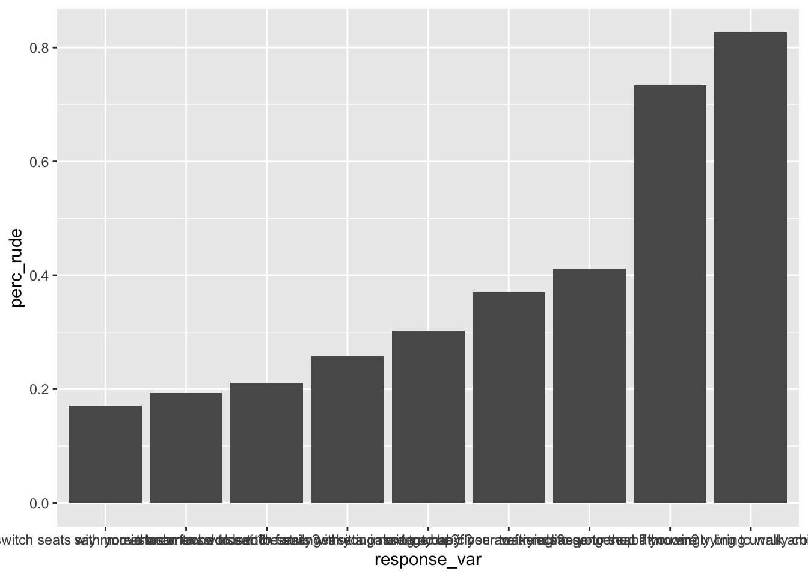
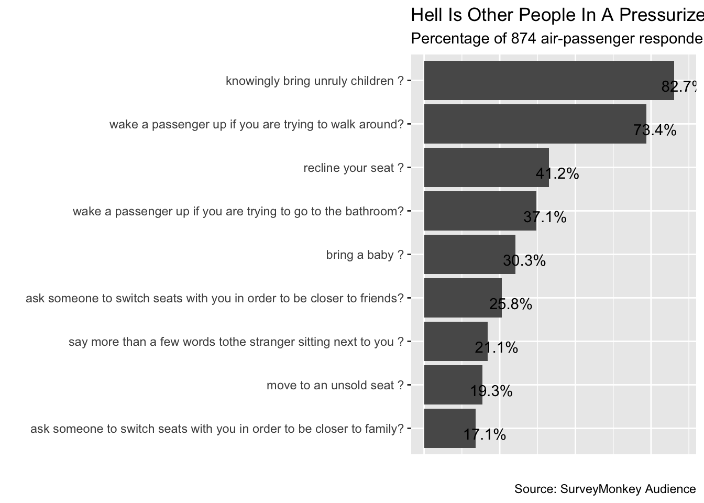

6 Categorical Data in the Tidyverse
https://learn.datacamp.com/courses/categorical-data-in-the-tidyverse
Required packages to load:
library(ggplot2)
library(dplyr)##
## Attaching package: 'dplyr'## The following objects are masked from 'package:stats':
##
## filter, lag## The following objects are masked from 'package:base':
##
## intersect, setdiff, setequal, unionlibrary(tidyr)
library(readr)
library(forcats)
library(stringr)
library(scales)##
## Attaching package: 'scales'## The following object is masked from 'package:readr':
##
## col_factor6.1 Introduction to Factor Variables
Getting Number Of Levels
mutate() and summarise() in dplyr both have variants to add the suffix if or all to change the operation. mutate_if() and summarise_if apply their “second argument”-a function, to all columns where the “first argument” is true, and mutate_all() and summarise_all take one argument, a function, and apply it to all columns.
# Change all the character columns to factors
responses_as_factors <- multiple_choice_responses %>%
mutate_if(is.character, as.factor)
number_of_levels <- responses_as_factors %>%
# apply the function nlevels to each column
summarise_all(nlevels) %>%
# change the dataset from wide to long
gather(variable, num_levels)
number_of_levels[1:8,]## # A tibble: 8 × 2
## variable num_levels
## <chr> <int>
## 1 LearningPlatformUsefulnessArxiv 2
## 2 LearningPlatformUsefulnessBlogs 2
## 3 LearningPlatformUsefulnessCollege 2
## 4 LearningPlatformUsefulnessCompany 1
## 5 LearningPlatformUsefulnessConferences 2
## 6 LearningPlatformUsefulnessFriends 1
## 7 LearningPlatformUsefulnessKaggle 2
## 8 LearningPlatformUsefulnessNewsletters 1Examining Number Of Levels
dplyr has two other functions to explore a dataset. The first is top_n(x, var), which give the first x rows of a dataset based on the value of var.
mtcars %>%
top_n(2, mpg)## mpg cyl disp hp drat wt qsec vs am gear carb
## Fiat 128 32.4 4 78.7 66 4.08 2.200 19.47 1 1 4 1
## Toyota Corolla 33.9 4 71.1 65 4.22 1.835 19.90 1 1 4 1The other ispull(), which allows extraction of a column and take out the name, leaving only the value(s) from the column.
pull can be used interchangeably with$as a way to extract a column as a vector from a table. For example, mean(mtcars$mpg) is the same as mean(mtcars %>% pull(mpg)) or mtcars %>% pull(mpg) %>% mean().
mtcars %>%
top_n(2, mpg) %>%
pull(mpg)## [1] 32.4 33.9Reordering A Variable By Its Frequency
One of the primary purposes of the forcats package is to make it easy to quickly change visualizations when working with qualitative variables.
Flip the coordinates using coord_flip() to make it more readable.
Use fct_infreq() to make the bar plot ordered by frequency.
Use fct_rev() to reverse the order of a factor.
Use fct_reorder() from forcats to take one variable and order it by another.
# Make a bar plot
ggplot(multiple_choice_responses, aes(x = fct_rev(fct_infreq(EmployerIndustry)))) +
geom_bar() +
# flip the coordinates
coord_flip()
6.2 Manipulating Factor Variables
How To Change The Order Of Levels
Use fct_relevel() to change the order of factor levels.
# Get the levels of WorkInternalVsExternalTools
levels(responses_data$WorkInternalVsExternalTools)## [1] "Approximately half internal and half external"
## [2] "Do not know"
## [3] "Entirely external"
## [4] "Entirely internal"
## [5] "More external than internal"
## [6] "More internal than external"# Reorder the levels from internal to external
reordered_respsonses <- responses_data[1:8,] %>%
mutate(WorkInternalVsExternalTools = fct_relevel(WorkInternalVsExternalTools,
"Entirely internal",
"More internal than external",
"Approximately half internal and half external",
"More external than internal",
"Entirely external",
"Do not know"))Sometimes, a data have many levels and only need to move one. Instead of writing out all the levels, use some arguments in fct_relevel() to save time.
In the code below, using after = Inf will move the specified level to the last, if after = n, in which n is a number, then that specified level will the reordered to after that nth place.
# Reorder the levels from internal to external
somwhat_reordered <- responses_data %>%
# Move "Do not know" to be the last level.
mutate(WorkInternalVsExternalTools = fct_relevel(WorkInternalVsExternalTools, "Do not know", after = Inf)) %>%
# Move "Entirely internal" and ""Approximately half internal and half external" to the front
mutate(WorkInternalVsExternalTools = fct_relevel(WorkInternalVsExternalTools, "Entirely internal", "Approximately half internal and half external"))
# Get the levels of WorkInternalVsExternalTools
levels(somwhat_reordered$WorkInternalVsExternalTools) ## [1] "Entirely internal"
## [2] "Approximately half internal and half external"
## [3] "Entirely external"
## [4] "More external than internal"
## [5] "More internal than external"
## [6] "Do not know"Renaming Levels
Use fct_recode() to rename levels, with the new level name on the left, and the old on the right:
# Reorder the levels from internal to external
renamed_respsonses <- responses_data[1:8,] %>%
mutate(WorkInternalVsExternalTools = fct_recode(WorkInternalVsExternalTools,
"Entirely In" = "Entirely internal",
"More In than Out" = "More internal than external",
"Hald In and Out" = "Approximately half internal and half external",
"More Out than In" = "More external than internal",
"Entirely Out" = "Entirely external",
"IDK" = "Do not know"))
# Get the levels of WorkInternalVsExternalTools
levels(renamed_respsonses$WorkInternalVsExternalTools)## [1] "Hald In and Out" "IDK" "Entirely Out" "Entirely In"
## [5] "More Out than In" "More In than Out"How To Collapse/Merge Levels
Sometimes, a dataset would have too many levels that ties to a general category, so merging those levels into one umbrella level would be easier to the eyes. Use fct_collapse() to collapse the levels into one.
After collapsing the desired levels into one, there would non-essential levels, classifying those unnecessary levels into other level would be ideal. Use fct_other() to turn other levels into other(use keep = to retain the umbrella created titles)
responses_data %>%
# Create new variable, grouped_titles, by collapsing levels in CurrentJobTitleSelect
mutate(grouped_titles = fct_collapse(CurrentJobTitleSelect,
"Computer Scientist" = "Software Developer/Software Engineer",
"Data Analyst/Scientist/Engineer" = c("DBA/Database Engineer", "Data Scientist",
"Business Analyst"))) %>%
# Keep all the new titles and turn every other title into "Other"
mutate(grouped_titles = fct_other(grouped_titles,
keep = c("Computer Scientist",
"Data Analyst/Scientist/Engineer"))) %>%
# Get a count of the grouped titles
count(grouped_titles)## # A tibble: 4 × 2
## grouped_titles n
## <fct> <int>
## 1 Data Analyst/Scientist/Engineer 5
## 2 Computer Scientist 5
## 3 Other 2
## 4 <NA> 8Showing Levels By Proportion
Use fct_lump() to show only the selected levels that exceed the specified proportion(percentage of that level in the dataset), otherwise, collapse all the non-qualified levels into other).
responses_data %>%
# remove NAs of MLMethodNextYearSelect
filter(!is.na(MLMethodNextYearSelect)) %>%
# create ml_method, which lumps all those with less than 5% of people into "Other"
mutate(ml_method = fct_lump(MLMethodNextYearSelect, prop = .11)) %>%
# count the frequency of your new variable, sorted in descending order
count(ml_method, sort = TRUE)## # A tibble: 5 × 2
## ml_method n
## <fct> <int>
## 1 Deep learning 6
## 2 Other 4
## 3 Neural Nets 2
## 4 Random Forests 2
## 5 Text Mining 2Showing The “N” Number Most Common Levels
Instead of showing levels by proportion but to show the most common n levels, use:
fct_lump(dataset_name, n = __, other_level = "title_of_non-qualified_levels")For example:
responses_data %>%
# remove NAs
filter(!is.na(MLMethodNextYearSelect)) %>%
# create ml_method, retaining the first most common method and renaming others "other method"
mutate(ml_method = fct_lump(MLMethodNextYearSelect, n = 1, other_level = "other method")) %>%
# count the frequency of your new variable, sorted in descending order
count(ml_method, sort = TRUE)## # A tibble: 2 × 2
## ml_method n
## <fct> <int>
## 1 other method 10
## 2 Deep learning 66.3 Creating Factor Variables
Use str_remove() from the stringr package to remove a certain phrase from observations in a column:
platform_usefulness_long <- responses_data %>%
# select columns with LearningPlatformUsefulness in title
select(contains("LearningPlatformUsefulness")) %>%
# change data from wide to long
gather(learning_platform, usefulness) %>%
# remove rows where usefulness is NA
filter(!is.na(usefulness))
platform_usefulness_long[1:7,]## # A tibble: 7 × 2
## learning_platform usefulness
## <chr> <chr>
## 1 LearningPlatformUsefulnessArxiv Very useful
## 2 LearningPlatformUsefulnessArxiv Very useful
## 3 LearningPlatformUsefulnessArxiv Somewhat useful
## 4 LearningPlatformUsefulnessArxiv Somewhat useful
## 5 LearningPlatformUsefulnessBlogs Very useful
## 6 LearningPlatformUsefulnessBlogs Somewhat useful
## 7 LearningPlatformUsefulnessBlogs Very useful# remove "LearningPlatformUsefulness" from each string in learning_platform
platform_usefulness_short <- platform_usefulness_long %>%
mutate(learning_platform = str_remove(learning_platform, "LearningPlatformUsefulness"))
platform_usefulness_short[1:7,]## # A tibble: 7 × 2
## learning_platform usefulness
## <chr> <chr>
## 1 Arxiv Very useful
## 2 Arxiv Very useful
## 3 Arxiv Somewhat useful
## 4 Arxiv Somewhat useful
## 5 Blogs Very useful
## 6 Blogs Somewhat useful
## 7 Blogs Very usefulHow To Add A Counted Column With “add+count()”
add_count() adds a column to the dataset, n, keeping the same number of rows as the original dataset. Just like count(), n defaults to be the number of rows for each group. Set wt equal to another column to make n equal to the sum of that column for each group:
perc_useful_platform <- platform_usefulness_short %>%
# change dataset to one row per learning_platform usefulness pair with number of entries for each
count(learning_platform, usefulness) %>%
# use add_count to create column with total number of answers for that learning_platform
add_count(learning_platform, wt = n, name='nn') %>%
# create a new column, perc, that is the percentage of people giving that response for that learning_platform
mutate(perc = n / nn)
perc_useful_platform[1:5,]## # A tibble: 5 × 5
## learning_platform usefulness n nn perc
## <chr> <chr> <int> <int> <dbl>
## 1 Arxiv Somewhat useful 2 4 0.5
## 2 Arxiv Very useful 2 4 0.5
## 3 Blogs Somewhat useful 2 5 0.4
## 4 Blogs Very useful 3 5 0.6
## 5 College Somewhat useful 2 5 0.4Changing And Creating Variables With “case_when()”
Make a new categorical variable/column base on another column using case_when():
mtcars[1:7,] %>%
# Create the speed column/variable based on hp (horse power)
mutate(speed = case_when(
hp < 99 ~ "Too Slow",
between(hp, 100, 199) ~ "Fast",
between(hp, 200, 299) ~ "Very Fast",
hp > 300 ~ "Super Sonic"
)) %>%
select(hp, speed)## hp speed
## Mazda RX4 110 Fast
## Mazda RX4 Wag 110 Fast
## Datsun 710 93 Too Slow
## Hornet 4 Drive 110 Fast
## Hornet Sportabout 175 Fast
## Valiant 105 Fast
## Duster 360 245 Very Fast6.4 Case Study on Flight Etiquette
Utilize the tools above to practice on an actual dataset:
flying_etiquette <- read_csv("https://assets.datacamp.com/production/repositories/1834/datasets/bef2c6e1ef42a2f230383e080fa7379912860017/flying-etiquette.csv")## Rows: 1040 Columns: 27
## ── Column specification ────────────────────────────────────────────────────────
## Delimiter: ","
## chr (26): How often do you travel by plane?, Do you ever recline your seat w...
## dbl (1): RespondentID
##
## ℹ Use `spec()` to retrieve the full column specification for this data.
## ℹ Specify the column types or set `show_col_types = FALSE` to quiet this message.Changing Characters To Factors
There’re backticks around the column name because there are spaces in the column names! Normally, underscores are used.
Use mutate_if() to change character type columns into factor type:
flying_etiquette %>%
# Change characters to factors
mutate_if(is.character, as.factor) %>%
# Filter out those who have never flown on a plane
filter(`How often do you travel by plane?` != "Never")Reformat/Filter Selected Data For Graphing
Reformat the data to get it in shape for plotting. The graph only looks at flier’s opinions about whether different behaviors are rude, so select only those columns.
gathered_data <- flying_etiquette %>%
mutate_if(is.character, as.factor) %>%
filter(`How often do you travel by plane?` != "Never") %>%
# Select columns containing "rude"
select(contains("rude")) %>%
# Change format from wide to long
gather(response_var, value)## Warning: attributes are not identical across measure variables;
## they will be droppedCleaning Up Strings
Use regex or regular expressions to capture general patterns. For example, .*science would match data science in the string data science rocks!.
These are two basic notations:
## Expression Does_This
## 1 . matches any character
## 2 * zero or more timesgathered_data[1:4,] %>%
select(response_var)## # A tibble: 4 × 1
## response_var
## <chr>
## 1 Is itrude to move to an unsold seat on a plane?
## 2 Is itrude to move to an unsold seat on a plane?
## 3 Is itrude to move to an unsold seat on a plane?
## 4 Is itrude to move to an unsold seat on a plane?gathered_data[1:4,] %>%
# Remove everything before and including "rude to " (with that space at the end!)
mutate(response_var = str_remove(response_var, ".*rude to ")) %>%
# Remove "on a plane"
mutate(response_var = str_remove(response_var, "on a plane"))## # A tibble: 4 × 2
## response_var value
## <chr> <chr>
## 1 move to an unsold seat ? <NA>
## 2 move to an unsold seat ? No, not rude at all
## 3 move to an unsold seat ? No, not rude at all
## 4 move to an unsold seat ? No, not rude at allDichotomizing Variables/Simplifying Observations
In the value column, there are a variety of observations that indicates a range from not rude, somwhat, to very rude. To make it easier to plot, to simplify/categorize the observations, split it into 2 groups, rude and not rude.
gathered_data[1:10,] %>%
pull(value)## [1] NA "No, not rude at all" "No, not rude at all"
## [4] "No, not rude at all" "No, not rude at all" "Yes, somewhat rude"
## [7] "No, not rude at all" "No, not rude at all" "No, not rude at all"
## [10] "Yes, very rude"Right now, our data is still in the format of one row per person per question. But for us to graph it, we’ll want to change that so each row is a question with the summary information about the response to that question.
rude_behaviors <- gathered_data %>%
mutate(response_var = str_replace(response_var, '.*rude to ', '')) %>%
mutate(response_var = str_replace(response_var, 'on a plane', '')) %>%
# Remove rows that are NA in the value column
filter(!is.na(value)) %>%
mutate(rude = if_else(value %in% c("No, not rude at all", "No, not at all rude"), 0, 1)) %>%
# Group by response_var
group_by(response_var) %>%
# Create perc_rude, the percent considering each behavior rude
summarise(perc_rude = mean(rude))
rude_behaviors## # A tibble: 9 × 2
## response_var perc_rude
## <chr> <dbl>
## 1 ask someone to switch seats with you in order to be closer to famil… 0.171
## 2 ask someone to switch seats with you in order to be closer to frien… 0.258
## 3 bring a baby ? 0.303
## 4 knowingly bring unruly children ? 0.827
## 5 move to an unsold seat ? 0.193
## 6 recline your seat ? 0.412
## 7 say more than a few words tothe stranger sitting next to you ? 0.211
## 8 wake a passenger up if you are trying to go to the bathroom? 0.371
## 9 wake a passenger up if you are trying to walk around? 0.734initial Plot
The initial plot will have a few problems that are aesthetically unpleasing. For example, there are no labels, x-axis titles are jumbled up. We’ll fix it step by step:
initial_plot <- rude_behaviors %>%
# reorder response_var by perc_rude
mutate(response_var = fct_reorder(response_var, perc_rude)) %>%
# make a bar plot of perc_rude by response_var
ggplot(aes(x = response_var, y = perc_rude)) +
geom_col()
# View your plot
initial_plot
Fixing Labels
Our initial plot displays the data, but there’s a lot of work to do. Let’s start with the text above and around the plot. We’ve seen how the ggplot2 layer labs() can take multiple arguments to modify the text:
titled_plot <- initial_plot +
# Add the title, subtitle, and caption
labs(title = "Hell Is Other People In A Pressurized Metal Tube",
subtitle = "Percentage of 874 air-passenger respondents who said action is very or somewhat rude",
caption = "Source: SurveyMonkey Audience",
# Remove the x- and y-axis labels
x = "",
y = "")
titled_plot
Flipping X And Y For Better Visualization
When the labels for our x-axis run into each other, we have two main choices: change the labels to be vertical instead of horizontal or flip the axes.
flipped_plot <- titled_plot +
# Flip the axes
coord_flip() +
# Remove the x-axis ticks and labels
theme(axis.text.x = element_blank(),
axis.ticks.x = element_blank())
flipped_plotFinalizing Steps
The FiveThirtyEight chart displayed the bar’s height above each bar. We can do this with a geom_text() layer. Positioning the text just right above the bar takes a few extra argument.
position = position_dodge(0.9), vjust = 1 part of the code adjusts the percentage output position on the bar so it looks better.
flipped_plot +
# Apply percent() to perc_rude to label above the bar with the perc value
geom_text(aes(label = percent(perc_rude),
y = perc_rude + .03),
position = position_dodge(0.9),
vjust = 1)